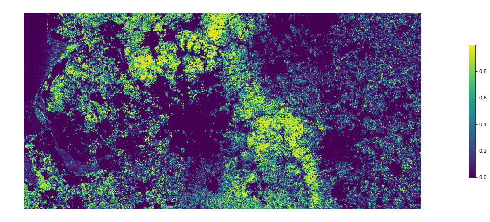
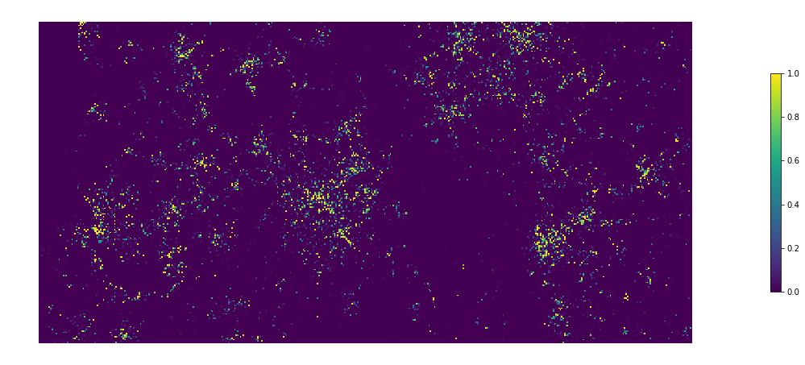
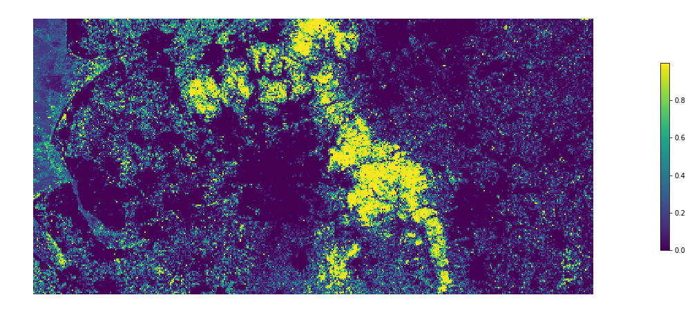
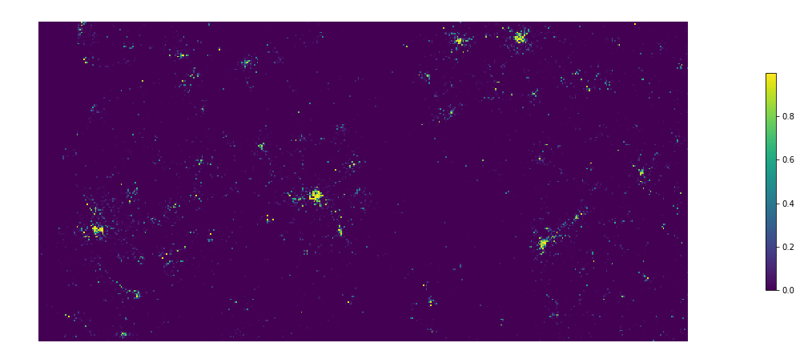

Create chips for a continous stretch of land¶
This notebook creates chips completely covering set bbox.
import glob
import os
import requests
import shutil
import warnings
from random import shuffle
from itertools import product, chain
from pathlib import Path
import contextily
import dask
import dask_geopandas
import dask.bag
import dask.dataframe
import geopandas
import numpy
import pandas
import pygeos
import pyogrio
import xarray, rioxarray
import rasterio
import libpysal
from dask_geopandas.hilbert_distance import _hilbert_distance
from dask.distributed import Client, LocalCluster
from shapely.geometry import box
from shapely.ops import polygonize
from tqdm.auto import tqdm
from sqlalchemy import create_engine
import tools
import urbangrammar_graphics as ugg
import seaborn
import matplotlib.pyplot as plt
client = Client(
LocalCluster(n_workers=16, threads_per_worker=1)
)
client
/opt/conda/lib/python3.9/site-packages/distributed/node.py:180: UserWarning: Port 8787 is already in use. Perhaps you already have a cluster running? Hosting the HTTP server on port 40693 instead warnings.warn(
Client
Client-0a709c0f-b0cd-11ec-beb2-f92bf9333365
| Connection method: Cluster object | Cluster type: distributed.LocalCluster |
| Dashboard: http://127.0.0.1:40693/status |
Cluster Info
LocalCluster
5a690d40
| Dashboard: http://127.0.0.1:40693/status | Workers: 16 |
| Total threads: 16 | Total memory: 125.54 GiB |
| Status: running | Using processes: True |
Scheduler Info
Scheduler
Scheduler-2809c754-3bc5-48e6-853c-33a5d72ff838
| Comm: tcp://127.0.0.1:39993 | Workers: 16 |
| Dashboard: http://127.0.0.1:40693/status | Total threads: 16 |
| Started: Just now | Total memory: 125.54 GiB |
Workers
Worker: 0
| Comm: tcp://127.0.0.1:39695 | Total threads: 1 |
| Dashboard: http://127.0.0.1:39853/status | Memory: 7.85 GiB |
| Nanny: tcp://127.0.0.1:38915 | |
| Local directory: /home/jovyan/work/signature_ai/create_chips/dask-worker-space/worker-rva5cyza | |
Worker: 1
| Comm: tcp://127.0.0.1:33429 | Total threads: 1 |
| Dashboard: http://127.0.0.1:39655/status | Memory: 7.85 GiB |
| Nanny: tcp://127.0.0.1:35301 | |
| Local directory: /home/jovyan/work/signature_ai/create_chips/dask-worker-space/worker-l37yg4_t | |
Worker: 2
| Comm: tcp://127.0.0.1:42183 | Total threads: 1 |
| Dashboard: http://127.0.0.1:41983/status | Memory: 7.85 GiB |
| Nanny: tcp://127.0.0.1:35041 | |
| Local directory: /home/jovyan/work/signature_ai/create_chips/dask-worker-space/worker-cme8gy6c | |
Worker: 3
| Comm: tcp://127.0.0.1:44245 | Total threads: 1 |
| Dashboard: http://127.0.0.1:42583/status | Memory: 7.85 GiB |
| Nanny: tcp://127.0.0.1:44439 | |
| Local directory: /home/jovyan/work/signature_ai/create_chips/dask-worker-space/worker-3llmoc3z | |
Worker: 4
| Comm: tcp://127.0.0.1:42301 | Total threads: 1 |
| Dashboard: http://127.0.0.1:41017/status | Memory: 7.85 GiB |
| Nanny: tcp://127.0.0.1:43779 | |
| Local directory: /home/jovyan/work/signature_ai/create_chips/dask-worker-space/worker-p0lxg7yk | |
Worker: 5
| Comm: tcp://127.0.0.1:44305 | Total threads: 1 |
| Dashboard: http://127.0.0.1:41319/status | Memory: 7.85 GiB |
| Nanny: tcp://127.0.0.1:34479 | |
| Local directory: /home/jovyan/work/signature_ai/create_chips/dask-worker-space/worker-0ge9_jwv | |
Worker: 6
| Comm: tcp://127.0.0.1:40469 | Total threads: 1 |
| Dashboard: http://127.0.0.1:34997/status | Memory: 7.85 GiB |
| Nanny: tcp://127.0.0.1:36967 | |
| Local directory: /home/jovyan/work/signature_ai/create_chips/dask-worker-space/worker-znhaluis | |
Worker: 7
| Comm: tcp://127.0.0.1:37557 | Total threads: 1 |
| Dashboard: http://127.0.0.1:37519/status | Memory: 7.85 GiB |
| Nanny: tcp://127.0.0.1:46205 | |
| Local directory: /home/jovyan/work/signature_ai/create_chips/dask-worker-space/worker-j7vt84ag | |
Worker: 8
| Comm: tcp://127.0.0.1:42603 | Total threads: 1 |
| Dashboard: http://127.0.0.1:41469/status | Memory: 7.85 GiB |
| Nanny: tcp://127.0.0.1:35089 | |
| Local directory: /home/jovyan/work/signature_ai/create_chips/dask-worker-space/worker-xkld37_f | |
Worker: 9
| Comm: tcp://127.0.0.1:44383 | Total threads: 1 |
| Dashboard: http://127.0.0.1:33717/status | Memory: 7.85 GiB |
| Nanny: tcp://127.0.0.1:38039 | |
| Local directory: /home/jovyan/work/signature_ai/create_chips/dask-worker-space/worker-dslve7ss | |
Worker: 10
| Comm: tcp://127.0.0.1:33519 | Total threads: 1 |
| Dashboard: http://127.0.0.1:36957/status | Memory: 7.85 GiB |
| Nanny: tcp://127.0.0.1:38753 | |
| Local directory: /home/jovyan/work/signature_ai/create_chips/dask-worker-space/worker-ydvnunvf | |
Worker: 11
| Comm: tcp://127.0.0.1:39195 | Total threads: 1 |
| Dashboard: http://127.0.0.1:38073/status | Memory: 7.85 GiB |
| Nanny: tcp://127.0.0.1:41379 | |
| Local directory: /home/jovyan/work/signature_ai/create_chips/dask-worker-space/worker-hn87j_az | |
Worker: 12
| Comm: tcp://127.0.0.1:41703 | Total threads: 1 |
| Dashboard: http://127.0.0.1:36965/status | Memory: 7.85 GiB |
| Nanny: tcp://127.0.0.1:33283 | |
| Local directory: /home/jovyan/work/signature_ai/create_chips/dask-worker-space/worker-gbzdh2fs | |
Worker: 13
| Comm: tcp://127.0.0.1:38963 | Total threads: 1 |
| Dashboard: http://127.0.0.1:43113/status | Memory: 7.85 GiB |
| Nanny: tcp://127.0.0.1:44239 | |
| Local directory: /home/jovyan/work/signature_ai/create_chips/dask-worker-space/worker-csmntc6w | |
Worker: 14
| Comm: tcp://127.0.0.1:33825 | Total threads: 1 |
| Dashboard: http://127.0.0.1:43577/status | Memory: 7.85 GiB |
| Nanny: tcp://127.0.0.1:38907 | |
| Local directory: /home/jovyan/work/signature_ai/create_chips/dask-worker-space/worker-lq1otwlw | |
Worker: 15
| Comm: tcp://127.0.0.1:45207 | Total threads: 1 |
| Dashboard: http://127.0.0.1:39721/status | Memory: 7.85 GiB |
| Nanny: tcp://127.0.0.1:43557 | |
| Local directory: /home/jovyan/work/signature_ai/create_chips/dask-worker-space/worker-13sj1h6q | |
nw = (321566, 365379, 468106, 437198)
gla = (240000,650000, 280000, 680000)
specs = {
'bb': box(321566, 365379, 468106, 437198),
'chip_size': 32,
'bands': [1, 2, 3], #RGB
'mosaic_p': (
'/home/jovyan/work/urbangrammar_samba/'
'ghs_composite_s2/GHS-composite-S2.vrt'
),
'folder': (
'../../chips/32_nw/chips/'
),
}
r = rioxarray.open_rasterio(
specs['mosaic_p'], chunks={'x': 1024, 'y': 1024}
)
Get range of coordinates from the mosaic¶
sample = nw
start_x = sample[0]
start_y = sample[1]
end_x = sample[2]
end_y = sample[3]
x_coords = numpy.arange(start_x, end_x, specs["chip_size"] * 10)
y_coords = numpy.arange(start_y, end_y, specs["chip_size"] * 10)
x_bag = dask.bag.from_sequence(x_coords)
y_bag = dask.bag.from_sequence(y_coords)
product_bag = x_bag.product(y_bag)
ddf = product_bag.to_dataframe(meta={"x": float, "y":float})
ddf["geometry"] = dask_geopandas.points_from_xy(ddf, "x", "y", crs=27700)
gddf = dask_geopandas.from_dask_dataframe(ddf).set_crs(27700)
polygons = gddf.buffer(specs['chip_size'] * 10 / 2, cap_style=3)
gddf["geometry"] = polygons
gddf.to_parquet("/home/jovyan/work/chips/32_nw/chip_bounds/", overwrite=True)
client.restart()
Client
Client-1c4f17b4-9a11-11ec-9bf9-4b0e5ffb55aa
| Connection method: Cluster object | Cluster type: distributed.LocalCluster |
| Dashboard: http://127.0.0.1:8787/status |
Cluster Info
LocalCluster
a5747fd2
| Dashboard: http://127.0.0.1:8787/status | Workers: 16 |
| Total threads: 16 | Total memory: 125.54 GiB |
| Status: running | Using processes: True |
Scheduler Info
Scheduler
Scheduler-8ebe0e59-39d4-4652-884c-1560cabe7b97
| Comm: tcp://127.0.0.1:35885 | Workers: 16 |
| Dashboard: http://127.0.0.1:8787/status | Total threads: 16 |
| Started: 11 minutes ago | Total memory: 125.54 GiB |
Workers
Worker: 0
| Comm: tcp://127.0.0.1:34931 | Total threads: 1 |
| Dashboard: http://127.0.0.1:34219/status | Memory: 7.85 GiB |
| Nanny: tcp://127.0.0.1:46591 | |
| Local directory: /home/jovyan/work/signature_ai/create_chips/dask-worker-space/worker-87824r0h | |
Worker: 1
| Comm: tcp://127.0.0.1:34621 | Total threads: 1 |
| Dashboard: http://127.0.0.1:41091/status | Memory: 7.85 GiB |
| Nanny: tcp://127.0.0.1:37405 | |
| Local directory: /home/jovyan/work/signature_ai/create_chips/dask-worker-space/worker-sqay4z0g | |
Worker: 2
| Comm: tcp://127.0.0.1:46523 | Total threads: 1 |
| Dashboard: http://127.0.0.1:40531/status | Memory: 7.85 GiB |
| Nanny: tcp://127.0.0.1:33265 | |
| Local directory: /home/jovyan/work/signature_ai/create_chips/dask-worker-space/worker-981blxcs | |
Worker: 3
| Comm: tcp://127.0.0.1:41761 | Total threads: 1 |
| Dashboard: http://127.0.0.1:44229/status | Memory: 7.85 GiB |
| Nanny: tcp://127.0.0.1:41715 | |
| Local directory: /home/jovyan/work/signature_ai/create_chips/dask-worker-space/worker-qmkkduiw | |
Worker: 4
| Comm: tcp://127.0.0.1:41387 | Total threads: 1 |
| Dashboard: http://127.0.0.1:35811/status | Memory: 7.85 GiB |
| Nanny: tcp://127.0.0.1:39143 | |
| Local directory: /home/jovyan/work/signature_ai/create_chips/dask-worker-space/worker-qea6j5qb | |
Worker: 5
| Comm: tcp://127.0.0.1:33935 | Total threads: 1 |
| Dashboard: http://127.0.0.1:43425/status | Memory: 7.85 GiB |
| Nanny: tcp://127.0.0.1:38559 | |
| Local directory: /home/jovyan/work/signature_ai/create_chips/dask-worker-space/worker-2zo69nol | |
Worker: 6
| Comm: tcp://127.0.0.1:37731 | Total threads: 1 |
| Dashboard: http://127.0.0.1:44545/status | Memory: 7.85 GiB |
| Nanny: tcp://127.0.0.1:39839 | |
| Local directory: /home/jovyan/work/signature_ai/create_chips/dask-worker-space/worker-_srn1qtl | |
Worker: 7
| Comm: tcp://127.0.0.1:37231 | Total threads: 1 |
| Dashboard: http://127.0.0.1:38933/status | Memory: 7.85 GiB |
| Nanny: tcp://127.0.0.1:44133 | |
| Local directory: /home/jovyan/work/signature_ai/create_chips/dask-worker-space/worker-2uoh77u2 | |
Worker: 8
| Comm: tcp://127.0.0.1:40941 | Total threads: 1 |
| Dashboard: http://127.0.0.1:39407/status | Memory: 7.85 GiB |
| Nanny: tcp://127.0.0.1:39455 | |
| Local directory: /home/jovyan/work/signature_ai/create_chips/dask-worker-space/worker-4ertpm_9 | |
Worker: 9
| Comm: tcp://127.0.0.1:46639 | Total threads: 1 |
| Dashboard: http://127.0.0.1:44395/status | Memory: 7.85 GiB |
| Nanny: tcp://127.0.0.1:34105 | |
| Local directory: /home/jovyan/work/signature_ai/create_chips/dask-worker-space/worker-tnlzcgyb | |
Worker: 10
| Comm: tcp://127.0.0.1:36903 | Total threads: 1 |
| Dashboard: http://127.0.0.1:44315/status | Memory: 7.85 GiB |
| Nanny: tcp://127.0.0.1:41103 | |
| Local directory: /home/jovyan/work/signature_ai/create_chips/dask-worker-space/worker-wmaj6ym1 | |
Worker: 11
| Comm: tcp://127.0.0.1:33735 | Total threads: 1 |
| Dashboard: http://127.0.0.1:44075/status | Memory: 7.85 GiB |
| Nanny: tcp://127.0.0.1:34167 | |
| Local directory: /home/jovyan/work/signature_ai/create_chips/dask-worker-space/worker-2zhx2190 | |
Worker: 12
| Comm: tcp://127.0.0.1:35525 | Total threads: 1 |
| Dashboard: http://127.0.0.1:46201/status | Memory: 7.85 GiB |
| Nanny: tcp://127.0.0.1:36187 | |
| Local directory: /home/jovyan/work/signature_ai/create_chips/dask-worker-space/worker-gqk1phi2 | |
Worker: 13
| Comm: tcp://127.0.0.1:37065 | Total threads: 1 |
| Dashboard: http://127.0.0.1:39311/status | Memory: 7.85 GiB |
| Nanny: tcp://127.0.0.1:41903 | |
| Local directory: /home/jovyan/work/signature_ai/create_chips/dask-worker-space/worker-g39f_rh3 | |
Worker: 14
| Comm: tcp://127.0.0.1:41807 | Total threads: 1 |
| Dashboard: http://127.0.0.1:44975/status | Memory: 7.85 GiB |
| Nanny: tcp://127.0.0.1:46445 | |
| Local directory: /home/jovyan/work/signature_ai/create_chips/dask-worker-space/worker-m9mafbu4 | |
Worker: 15
| Comm: tcp://127.0.0.1:45083 | Total threads: 1 |
| Dashboard: http://127.0.0.1:43517/status | Memory: 7.85 GiB |
| Nanny: tcp://127.0.0.1:33095 | |
| Local directory: /home/jovyan/work/signature_ai/create_chips/dask-worker-space/worker-bd845t3i | |
df = geopandas.read_parquet("/home/jovyan/work/chips/32_nw/chip_bounds/")
centroid = df.centroid
df['X'] = centroid.x.astype(int)
df['Y'] = centroid.y.astype(int)
# Split chip_bbs
thr = numpy.linspace(0, df.shape[0], 17, dtype=int)
chunks = [
(df.iloc[thr[i]:thr[i+1], :], specs) for i in range(len(thr)-1)
]
import numpy as np
def bag_of_chips(chip_bbs, specs, npartitions):
'''
Load imagery for `chip_bbs` using a Dask bag
...
Arguments
---------
chip_bbs : GeoDataFrame
Geo-table with bounding boxes of the chips to load
specs : dict
Metadata dict, including, at least:
- `bands`: band index of each band of interest
- `chip_size`: size of each chip size expressed in pixels
- `mosaic_p`: path to the mosaic/file of imagery
npartitions : int
No. of partitions to split `chip_bbs` before sending to
Dask for distributed computation
Returns
-------
chips : ndarray
Numpy tensor of (N, chip_size, chip_size, n_bands) dimension
with imagery data
'''
# Split chip_bbs
thr = np.linspace(0, chip_bbs.shape[0], npartitions+1, dtype=int)
chunks = [
(chip_bbs.iloc[thr[i]:thr[i+1], :], specs) for i in range(len(thr)-1)
]
# Set up the bag
bag = dask.bag.from_sequence(
chunks, npartitions=npartitions
).map(chip_loader)
# Compute
chips = np.concatenate(bag.compute())
return chips
def chip_loader(pars):
'''
Load imagery for `chip_bbs`
...
Arguments (wrapped in `pars`)
-----------------------------
chip_bbs : GeoDataFrame
Geo-table with bounding boxes of the chips to load
specs : dict
Metadata dict, including, at least:
- `bands`: band index of each band of interest
- `chip_size`: size of each chip size expressed in pixels
- `mosaic_p`: path to the mosaic/file of imagery
Returns
-------
chips : ndarray
Numpy tensor of (N, chip_size, chip_size, n_bands) dimension
with imagery data
'''
chip_bbs, specs = pars
b = len(specs['bands'])
s = specs['chip_size']
chips = np.zeros((chip_bbs.shape[0], b, s, s))
with rasterio.open(specs['mosaic_p']) as src:
for i, tup in enumerate(chip_bbs.itertuples()):
img, transform = rasterio.mask.mask(
src, [tup.geometry], crop=True, all_touched=True
)
img = img[:b, :s, :s]
for ban, (l_min, l_max) in enumerate([(350, 1600), (500, 1600), (600, 1800)]):
img[ban][img[ban] > l_max] = l_max
img[ban][img[ban] < l_min] = l_min
a_std = (img[ban] - l_min) / (l_max - l_min)
img[ban] = a_std * 255
chips[i, :, :, :] = img
chips = np.moveaxis(chips, 1, -1)
return chips.astype(rasterio.uint8)
distributed.utils_perf - WARNING - full garbage collections took 62% CPU time recently (threshold: 10%)
chips = bag_of_chips(df, specs, 16)
numpy.save('../../chips/32_nw.npy', chips)
Now do the prediction using tensorflow notebook and load it back here once done.
pred = numpy.load("../../chips/32_nw_pred.npy")
key = {'accessible_suburbia': 0,
'connected_residential_neighbourhoods': 1,
'countryside_agriculture': 2,
'dense_residential_neighbourhoods': 3,
'dense_urban_neighbourhoods': 4,
'disconnected_suburbia': 5,
'gridded_residential_quarters': 6,
'open_sprawl': 7,
'urban_buffer': 8,
'urbanity': 9,
'warehouse_park_land': 10,
'wild_countryside': 11}
pred = pandas.DataFrame(pred, columns=key.keys())
pred = geopandas.GeoDataFrame(pred, geometry=df.geometry.values)
pred.sum(axis=0).sort_values()
/tmp/ipykernel_16050/1492853577.py:1: FutureWarning: Dropping of nuisance columns in DataFrame reductions (with 'numeric_only=None') is deprecated; in a future version this will raise TypeError. Select only valid columns before calling the reduction. pred.sum(axis=0).sort_values()
disconnected_suburbia 118.936691
connected_residential_neighbourhoods 1117.205566
gridded_residential_quarters 1396.922974
urbanity 2648.239502
dense_residential_neighbourhoods 2877.774658
dense_urban_neighbourhoods 3778.054443
accessible_suburbia 6523.984863
open_sprawl 12360.313477
warehouse_park_land 12723.044922
urban_buffer 13485.791992
countryside_agriculture 21036.947266
wild_countryside 24978.806641
dtype: float32
ax = pred.plot("wild_countryside", figsize=(20, 10), legend=True, legend_kwds={'shrink': 0.5})
ax.set_axis_off()
plt.savefig("figs/image_class_country.png", bbox_inches="tight")

ax = pred.plot("urbanity", figsize=(20, 10), legend=True, legend_kwds={'shrink': 0.5})
ax.set_axis_off()
plt.savefig("figs/image_class_urban.png", bbox_inches="tight")

pred.to_parquet("../../urbangrammar_samba/spatial_signatures/chips/32_nw_pred.parquet")
/tmp/ipykernel_6631/2264496793.py:1: UserWarning: this is an initial implementation of Parquet/Feather file support and associated metadata. This is tracking version 0.1.0 of the metadata specification at https://github.com/geopandas/geo-arrow-spec
This metadata specification does not yet make stability promises. We do not yet recommend using this in a production setting unless you are able to rewrite your Parquet/Feather files.
To further ignore this warning, you can do:
import warnings; warnings.filterwarnings('ignore', message='.*initial implementation of Parquet.*')
pred.to_parquet("../../urbangrammar_samba/spatial_signatures/chips/32_nw_pred.parquet")
props = geopandas.read_parquet('../../chips/32_nw/chip_proportions.pq')
props.plot("signature_type_4_0", figsize=(20, 10), legend=True,)
<AxesSubplot:>
Multi output regression¶
geom = geopandas.read_parquet("/home/jovyan/work/chips/32_nw/chip_bounds/")
pred = numpy.load("../../chips/32_nw_pred_multiclass.npy")
key = {'accessible_suburbia': 0,
'connected_residential_neighbourhoods': 1,
'countryside_agriculture': 2,
'dense_residential_neighbourhoods': 3,
'dense_urban_neighbourhoods': 4,
'disconnected_suburbia': 5,
'gridded_residential_quarters': 6,
'open_sprawl': 7,
'urban_buffer': 8,
'urbanity': 9,
'warehouse_park_land': 10,
'wild_countryside': 11}
pred = pandas.DataFrame(pred, columns=key.keys())
pred = geopandas.GeoDataFrame(pred, geometry=geom.geometry.values)
ax = pred.plot("wild_countryside", figsize=(20, 10), legend=True, legend_kwds={'shrink': 0.5})
ax.set_axis_off()
plt.savefig("figs/mor_country.png", bbox_inches="tight")

ax = pred.plot("urbanity", figsize=(20, 10), legend=True, legend_kwds={'shrink': 0.5})
ax.set_axis_off()
plt.savefig("figs/mor_urban.png", bbox_inches="tight")

cats = pred.drop(columns="geometry").idxmax(axis=1)
pred.plot(cats, figsize=(20, 10), legend=True, cmap='tab20')
<AxesSubplot:>
pred.to_parquet("../../urbangrammar_samba/spatial_signatures/chips/32_nw_pred_multiclass.parquet")
/tmp/ipykernel_12843/3647684065.py:1: UserWarning: this is an initial implementation of Parquet/Feather file support and associated metadata. This is tracking version 0.1.0 of the metadata specification at https://github.com/geopandas/geo-arrow-spec
This metadata specification does not yet make stability promises. We do not yet recommend using this in a production setting unless you are able to rewrite your Parquet/Feather files.
To further ignore this warning, you can do:
import warnings; warnings.filterwarnings('ignore', message='.*initial implementation of Parquet.*')
pred.to_parquet("../../urbangrammar_samba/spatial_signatures/chips/32_nw_pred_multiclass.parquet")
64¶
specs = {
'bb': box(321566, 365379, 468106, 437198),
'chip_size': 64,
'bands': [1, 2, 3], #RGB
'mosaic_p': (
'/home/jovyan/work/urbangrammar_samba/'
'ghs_composite_s2/GHS-composite-S2.vrt'
),
'folder': (
'../../chips/64_nw/chips/'
),
}
r = rioxarray.open_rasterio(
specs['mosaic_p'], chunks={'x': 1024, 'y': 1024}
)
Get range of coordinates from the mosaic¶
sample = nw
start_x = sample[0]
start_y = sample[1]
end_x = sample[2]
end_y = sample[3]
x_coords = numpy.arange(start_x, end_x, specs["chip_size"] * 10)
y_coords = numpy.arange(start_y, end_y, specs["chip_size"] * 10)
x_bag = dask.bag.from_sequence(x_coords)
y_bag = dask.bag.from_sequence(y_coords)
product_bag = x_bag.product(y_bag)
ddf = product_bag.to_dataframe(meta={"x": float, "y":float})
ddf["geometry"] = dask_geopandas.points_from_xy(ddf, "x", "y", crs=27700)
gddf = dask_geopandas.from_dask_dataframe(ddf).set_crs(27700)
polygons = gddf.buffer(specs['chip_size'] * 10 / 2, cap_style=3)
gddf["geometry"] = polygons
gddf.to_parquet("/home/jovyan/work/chips/64_nw/chip_bounds/", overwrite=True)
client.restart()
Client
Client-1c4f17b4-9a11-11ec-9bf9-4b0e5ffb55aa
| Connection method: Cluster object | Cluster type: distributed.LocalCluster |
| Dashboard: http://127.0.0.1:8787/status |
Cluster Info
LocalCluster
a5747fd2
| Dashboard: http://127.0.0.1:8787/status | Workers: 16 |
| Total threads: 16 | Total memory: 125.54 GiB |
| Status: running | Using processes: True |
Scheduler Info
Scheduler
Scheduler-8ebe0e59-39d4-4652-884c-1560cabe7b97
| Comm: tcp://127.0.0.1:35885 | Workers: 16 |
| Dashboard: http://127.0.0.1:8787/status | Total threads: 16 |
| Started: 11 minutes ago | Total memory: 125.54 GiB |
Workers
Worker: 0
| Comm: tcp://127.0.0.1:34931 | Total threads: 1 |
| Dashboard: http://127.0.0.1:34219/status | Memory: 7.85 GiB |
| Nanny: tcp://127.0.0.1:46591 | |
| Local directory: /home/jovyan/work/signature_ai/create_chips/dask-worker-space/worker-87824r0h | |
Worker: 1
| Comm: tcp://127.0.0.1:34621 | Total threads: 1 |
| Dashboard: http://127.0.0.1:41091/status | Memory: 7.85 GiB |
| Nanny: tcp://127.0.0.1:37405 | |
| Local directory: /home/jovyan/work/signature_ai/create_chips/dask-worker-space/worker-sqay4z0g | |
Worker: 2
| Comm: tcp://127.0.0.1:46523 | Total threads: 1 |
| Dashboard: http://127.0.0.1:40531/status | Memory: 7.85 GiB |
| Nanny: tcp://127.0.0.1:33265 | |
| Local directory: /home/jovyan/work/signature_ai/create_chips/dask-worker-space/worker-981blxcs | |
Worker: 3
| Comm: tcp://127.0.0.1:41761 | Total threads: 1 |
| Dashboard: http://127.0.0.1:44229/status | Memory: 7.85 GiB |
| Nanny: tcp://127.0.0.1:41715 | |
| Local directory: /home/jovyan/work/signature_ai/create_chips/dask-worker-space/worker-qmkkduiw | |
Worker: 4
| Comm: tcp://127.0.0.1:41387 | Total threads: 1 |
| Dashboard: http://127.0.0.1:35811/status | Memory: 7.85 GiB |
| Nanny: tcp://127.0.0.1:39143 | |
| Local directory: /home/jovyan/work/signature_ai/create_chips/dask-worker-space/worker-qea6j5qb | |
Worker: 5
| Comm: tcp://127.0.0.1:33935 | Total threads: 1 |
| Dashboard: http://127.0.0.1:43425/status | Memory: 7.85 GiB |
| Nanny: tcp://127.0.0.1:38559 | |
| Local directory: /home/jovyan/work/signature_ai/create_chips/dask-worker-space/worker-2zo69nol | |
Worker: 6
| Comm: tcp://127.0.0.1:37731 | Total threads: 1 |
| Dashboard: http://127.0.0.1:44545/status | Memory: 7.85 GiB |
| Nanny: tcp://127.0.0.1:39839 | |
| Local directory: /home/jovyan/work/signature_ai/create_chips/dask-worker-space/worker-_srn1qtl | |
Worker: 7
| Comm: tcp://127.0.0.1:37231 | Total threads: 1 |
| Dashboard: http://127.0.0.1:38933/status | Memory: 7.85 GiB |
| Nanny: tcp://127.0.0.1:44133 | |
| Local directory: /home/jovyan/work/signature_ai/create_chips/dask-worker-space/worker-2uoh77u2 | |
Worker: 8
| Comm: tcp://127.0.0.1:40941 | Total threads: 1 |
| Dashboard: http://127.0.0.1:39407/status | Memory: 7.85 GiB |
| Nanny: tcp://127.0.0.1:39455 | |
| Local directory: /home/jovyan/work/signature_ai/create_chips/dask-worker-space/worker-4ertpm_9 | |
Worker: 9
| Comm: tcp://127.0.0.1:46639 | Total threads: 1 |
| Dashboard: http://127.0.0.1:44395/status | Memory: 7.85 GiB |
| Nanny: tcp://127.0.0.1:34105 | |
| Local directory: /home/jovyan/work/signature_ai/create_chips/dask-worker-space/worker-tnlzcgyb | |
Worker: 10
| Comm: tcp://127.0.0.1:36903 | Total threads: 1 |
| Dashboard: http://127.0.0.1:44315/status | Memory: 7.85 GiB |
| Nanny: tcp://127.0.0.1:41103 | |
| Local directory: /home/jovyan/work/signature_ai/create_chips/dask-worker-space/worker-wmaj6ym1 | |
Worker: 11
| Comm: tcp://127.0.0.1:33735 | Total threads: 1 |
| Dashboard: http://127.0.0.1:44075/status | Memory: 7.85 GiB |
| Nanny: tcp://127.0.0.1:34167 | |
| Local directory: /home/jovyan/work/signature_ai/create_chips/dask-worker-space/worker-2zhx2190 | |
Worker: 12
| Comm: tcp://127.0.0.1:35525 | Total threads: 1 |
| Dashboard: http://127.0.0.1:46201/status | Memory: 7.85 GiB |
| Nanny: tcp://127.0.0.1:36187 | |
| Local directory: /home/jovyan/work/signature_ai/create_chips/dask-worker-space/worker-gqk1phi2 | |
Worker: 13
| Comm: tcp://127.0.0.1:37065 | Total threads: 1 |
| Dashboard: http://127.0.0.1:39311/status | Memory: 7.85 GiB |
| Nanny: tcp://127.0.0.1:41903 | |
| Local directory: /home/jovyan/work/signature_ai/create_chips/dask-worker-space/worker-g39f_rh3 | |
Worker: 14
| Comm: tcp://127.0.0.1:41807 | Total threads: 1 |
| Dashboard: http://127.0.0.1:44975/status | Memory: 7.85 GiB |
| Nanny: tcp://127.0.0.1:46445 | |
| Local directory: /home/jovyan/work/signature_ai/create_chips/dask-worker-space/worker-m9mafbu4 | |
Worker: 15
| Comm: tcp://127.0.0.1:45083 | Total threads: 1 |
| Dashboard: http://127.0.0.1:43517/status | Memory: 7.85 GiB |
| Nanny: tcp://127.0.0.1:33095 | |
| Local directory: /home/jovyan/work/signature_ai/create_chips/dask-worker-space/worker-bd845t3i | |
df = geopandas.read_parquet("/home/jovyan/work/chips/64_nw/chip_bounds/")
centroid = df.centroid
df['X'] = centroid.x.astype(int)
df['Y'] = centroid.y.astype(int)
# Split chip_bbs
thr = numpy.linspace(0, df.shape[0], 17, dtype=int)
chunks = [
(df.iloc[thr[i]:thr[i+1], :], specs) for i in range(len(thr)-1)
]
chips = bag_of_chips(df, specs, 16)
distributed.utils_perf - WARNING - full garbage collections took 55% CPU time recently (threshold: 10%) distributed.utils_perf - WARNING - full garbage collections took 55% CPU time recently (threshold: 10%)
numpy.save('../../chips/64_nw.npy', chips)
Inference in another notebook happens here
pred = numpy.load("../../chips/64_nw_pred_multiclass.npy")
key = {'accessible_suburbia': 0,
'connected_residential_neighbourhoods': 1,
'countryside_agriculture': 2,
'dense_residential_neighbourhoods': 3,
'dense_urban_neighbourhoods': 4,
'disconnected_suburbia': 5,
'gridded_residential_quarters': 6,
'open_sprawl': 7,
'urban_buffer': 8,
'urbanity': 9,
'warehouse_park_land': 10,
'wild_countryside': 11}
pred = pandas.DataFrame(pred, columns=key.keys())
pred = geopandas.GeoDataFrame(pred, geometry=df.geometry.values)
pred.plot("open_sprawl", figsize=(20, 10), legend=True,)
<AxesSubplot:>
cats = pred.drop(columns="geometry").idxmax(axis=1)
pred.plot(cats, figsize=(20, 10), legend=True, cmap='tab20')
<AxesSubplot:>
db = geopandas.read_parquet("../../urbangrammar_samba/spatial_signatures/chips/32_nw_pred.parquet")
from libpysal import weights
q = weights.Queen.from_dataframe(db)
pandas.Series(q.cardinalities).value_counts()
8 101688
5 1358
3 4
dtype: int64
props.drop(columns='geometry')[props.drop(columns='geometry').max(axis=1) == 1].idxmax(axis=1).value_counts()
signature_type_7_0 26792
signature_type_0_0 25758
signature_type_3_0 4896
signature_type_4_0 3154
signature_type_5_0 2144
signature_type_1_0 1589
signature_type_2_0 365
signature_type_6_0 279
signature_type_2_2 253
signature_type_2_1 232
signature_type_8_0 68
signature_type_9_0 14
signature_type_9_2 12
signature_type_9_4 1
dtype: int64